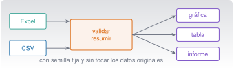
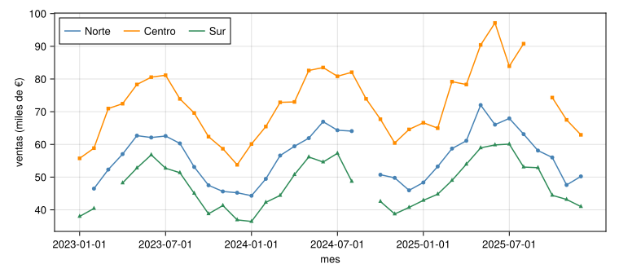
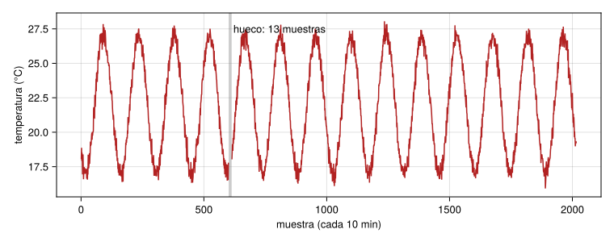
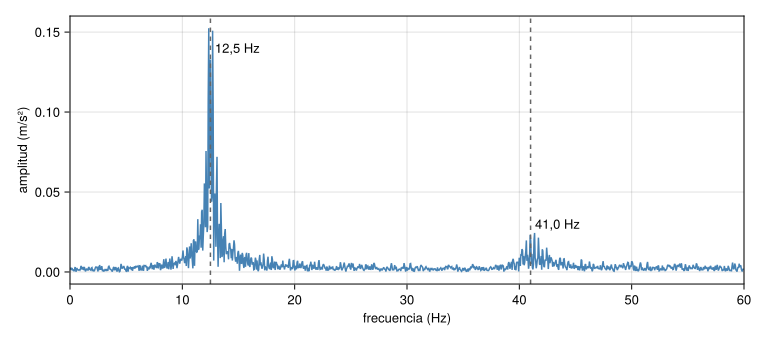

Excel, datos, Quarto e informes
C6 · Vía C
Versión 0.2.0 · editada el 23/10/2026 · comprobada el 23/10/2026 · Claude Code 2.1.309 (doc.) · pendiente de revisión

Objetivos y prerrequisitos
Objetivos. Al terminar la unidad sabrás:
- leer y escribir CSV y Excel con Julia (
CSV,DataFrames,XLSX) y con Python (pandas,openpyxl), cuidando tipos, fechas y celdas ausentes; - validar unos datos (ausentes, duplicados, formatos, huecos de un sensor) y dejar constancia de las incidencias;
- resumir con agrupaciones y estadística descriptiva, y comparar periodos con una gráfica honesta;
- generar un informe reproducible con Quarto (HTML y PDF) con código, ecuaciones, figuras, tablas, referencias cruzadas y bibliografía;
- procesar lotes de ficheros y programar tareas repetitivas;
- usar Claude Code para todo esto sin perder el control de los datos ni de los resultados.
Prerrequisitos. C5 (pruebas, revisión de código) y C2 (scripts, tareas programadas).
Tiempo orientativo. 8–10 horas. Nivel: intermedio. Herramientas: Julia 1.12 con CSV, DataFrames, XLSX y CairoMakie; Python con pandas, openpyxl y numpy; Quarto 1.10; para PDF, una distribución de LaTeX.
Todo el código vive en claude/c6-informes/_ejemplo/ (Julia y Python) con sus pruebas y se ejecutó el 23-10-2026: 23 aserciones de Julia 1.12.3 y 8 pruebas de Python (pandas y openpyxl), y las cifras de esta página salen de esas ejecuciones; Julia y Python coinciden en todos los casos. El informe de ejemplo (_ejemplo/informe/informe.qmd) se renderizó a HTML y a PDF con Quarto 1.10.19 y engine: julia. No se ha probado con Excel de Microsoft (no instalado): los libros se leyeron con XLSX.jl y openpyxl. Los datos son sintéticos (carpeta datos/sinteticos/curso-claude/).
Los datos de esta unidad. Cinco casos sintéticos con defectos deliberados, cada uno con su ficha .meta.toml:
| Caso | Fichero | Tema | Defecto deliberado |
|---|---|---|---|
| A | a_ventas.csv |
Ventas mensuales por región (36 meses × 3) | 5 ventas ausentes y 1 fila duplicada |
| B | b_absentismo.csv |
Ausencias de personal (RR. HH.) | 21 fechas en formato dd/mm/aaaa entre las ISO |
| C | c_mantenimiento.csv |
Órdenes de mantenimiento de 5 equipos | 3 costes ausentes |
| D | d_ambiental.csv |
Temperatura y humedad (sensor, cada 10 min) | Hueco de 13 muestras consecutivas |
| E | e_vibracion.csv |
Aceleración de una viga a 200 Hz | Ninguno (ruido de σ = 0,05 m/s²) |
Temas de la unidad
- C6.1 De Excel a DataFrames y pandas: hojas, rangos y tipos
- C6.2 Validación: ausentes, duplicados, formatos y registro de incidencias
- C6.3 Transformar y resumir: filtros, agrupaciones, indicadores y estadística descriptiva
- C6.4 Visualización y comparación entre periodos
- C6.5 Escribir resultados en Excel y CSV
- C6.6 Informes reproducibles con Quarto: HTML y PDF
- C6.7 Paneles de consulta, procesamiento por lotes y tareas recurrentes
- C6.8 Laboratorios: ventas, mantenimiento, turnos y vibración
Teoría breve
C6.1 De Excel a DataFrames y pandas: hojas, rangos y tipos
Una hoja de cálculo mezcla datos, cálculos, formato y comentarios. Un análisis reproducible separa esas cosas: los datos de entrada no se modifican nunca; el código los lee, los transforma y escribe los resultados aparte.
Un DataFrame (en Julia, DataFrames.jl; en Python, pandas) es una tabla con columnas tipadas. Casi todos los problemas de datos son problemas de tipos:
| Problema | Ejemplo | Consecuencia |
|---|---|---|
| Número leído como texto | "1.234,56" (coma decimal) |
No se puede sumar |
| Fecha ambigua | 05/03/2025: ¿5 de marzo o 3 de mayo? |
Análisis por mes erróneo |
| Celda vacía frente a cero | Ausente (missing/NaN) ≠ 0 |
Una media falsa |
| Códigos con ceros a la izquierda | 007 leído como 7 |
Se pierde información |
using CSV, DataFrames, XLSX
a = CSV.read("datos/sinteticos/curso-claude/a_ventas.csv", DataFrame; dateformat = "yyyy-mm-dd")
first(a, 3) # primeras filas
describe(a) # tipos, ausentes, resumen por columna
x = DataFrame(XLSX.readtable("libro.xlsx", "hoja1")) # una hoja de un Excelimport pandas as pd
a = pd.read_csv("datos/sinteticos/curso-claude/a_ventas.csv", parse_dates=["fecha"])
a.head(3)
a.info() # tipos y ausentes
x = pd.read_excel("libro.xlsx", sheet_name="hoja1", engine="openpyxl")En el caso A, describe(a) / a.info() muestran 109 filas y que ventas_eur tiene 5 valores ausentes: es lo primero que hay que mirar. Con Excel, ten en cuenta: el formato decimal y de fecha depende de la configuración regional; las fórmulas pueden leerse como sus valores guardados o como texto según la herramienta (compruébalo con tu fichero); las celdas combinadas y las filas de título rompen la estructura de tabla; y una hoja de Excel tiene un límite de 1 048 576 filas.
Regla de este curso: nunca sobrescribas el fichero original y no subas datos reales a una IA sin permiso (C0.7, C1.5): usa datos sintéticos o una muestra anonimizada de verdad.
Pon a prueba lo anterior.
Recibes un CSV con la fecha 05/03/2025. ¿Qué haces antes de analizar por mes?
- Supongo mm/dd/aaaa, que es lo habitual.
- Pregunto o determino el formato (por ejemplo, buscando fechas con día mayor que 12) y lo declaro al leer el fichero.
- Lo dejo como texto.
- Pido a la IA que adivine.
Una fecha ambigua puede ser 5 de marzo o 3 de mayo. Hay que determinar el formato (una fecha como 25/03/2025 lo delata) y declararlo explícitamente al leer.
C6.2 Validación: ausentes, duplicados, formatos y registro de incidencias
Antes de calcular, valida. Una validación mínima responde: ¿cuántas filas y columnas?, ¿qué ausentes hay y dónde?, ¿hay filas duplicadas?, ¿los formatos son los esperados?, ¿los valores caen en rangos plausibles? Y se registra lo que se ha hecho con cada incidencia (se descarta, se corrige, se imputa), con su motivo.
Caso A. Código en _ejemplo/julia/analisis.jl (validar_ventas) y python/analisis.py; resultado idéntico en ambos:
(filas = 109, duplicadas = 1, ausentes = 5)Caso B (fechas mixtas). Con la función parsear_fecha (prueba primero aaaa-mm-dd y luego dd/mm/aaaa; missing si no reconoce el formato), de las 240 filas, 21 vienen en formato dd/mm/aaaa, 0 quedan sin reconocer y la suma de días de ausencia es 814. Cuidado: una fecha 05/03/2025 solo es inequívoca porque sabemos que este fichero usa dd/mm/aaaa; el código no lo adivina.
Caso D (sensor con hueco). La función huecos devuelve los intervalos consecutivos de valores ausentes: [(601, 613)], es decir, 13 muestras seguidas (130 minutos) sin dato. Un hueco no es un cero: si lo rellenas con 0 estropeas la media; si lo ignoras, di que lo has ignorado.
Ausentes: tres opciones, todas con consecuencias.
| Opción | Cuándo | Riesgo |
|---|---|---|
| Excluir la fila o el dato | Pocos y sin patrón | Sesgo si faltan por una causa común |
| Imputar (media, interpolación) | Series con huecos cortos y análisis que lo toleran | Inventas un dato; hay que declararlo |
| Marcar y analizar aparte | Siempre que puedas | Más trabajo |
Registro de incidencias. Un fichero de texto o una hoja con: dato, qué pasó, qué se hizo, quién y cuándo. Es lo que permite a otra persona repetir y auditar el análisis.
- Sumar sin quitar duplicados: en el caso A, el total con el duplicado es 6 131 761,26 € frente a 6 069 845,38 € sin él.
- Tratar un ausente como 0 o excluirlo sin avisar.
- Fechas mal interpretadas que cambian el mes de un dato.
- Limpiar a mano en Excel y no dejar rastro: no se puede reproducir.
Pon a prueba lo anterior.
¿Cuántos valores de ventas_eur están ausentes en a_ventas.csv?
5 (de 109 filas; ya incluye la fila duplicada, que no tiene ausente). Comprobado en Julia (count(ismissing, df.ventas_eur)) y en Python (isna().sum()).
C6.3 Transformar y resumir: filtros, agrupaciones, indicadores y estadística descriptiva
El patrón básico es dividir, aplicar y combinar: separar por una clave (región, equipo, mes), calcular un resumen en cada grupo y juntar los resultados.
limpio = dropmissing(unique(a), :ventas_eur) # sin duplicados ni ausentes
combine(groupby(limpio, :region), :ventas_eur => sum => :total_eur, nrow => :meses)limpio = a.drop_duplicates().dropna(subset=["ventas_eur"])
limpio.groupby("region", sort=False)["ventas_eur"].agg(total_eur="sum", meses="count")Resultado del caso A (idéntico en Julia y Python, comprobado):
| Región | Total (€) | Meses con dato |
|---|---|---|
| Norte | 1 911 061,69 | 34 |
| Centro | 2 539 781,72 | 35 |
| Sur | 1 619 001,97 | 34 |
| Total | 6 069 845,38 | 103 |
Observa que cada región tiene 36 meses posibles y faltan datos: comparar totales entre regiones con distinto número de meses es engañoso. Mejor comparar la media mensual o indicar el número de meses.
Caso C (mantenimiento), resumen por tipo de orden:
| Tipo | Órdenes | Horas de parada | Horas medias | Coste total (€) |
|---|---|---|---|---|
| correctivo | 50 | 474,4 | 9,49 | 148 032,71 |
| preventivo | 130 | 158,2 | 1,22 | 18 513,95 |
Con 3 costes ausentes (que se han ignorado en la suma: el coste real es algo mayor). Las órdenes correctivas, el 28 % del total, concentran el 75 % de las horas de parada: ejemplo de un indicador que orienta una decisión (más mantenimiento preventivo), pero que no demuestra causalidad por sí solo.
Estadística descriptiva. Media, mediana, desviación típica, mínimo y máximo, cuartiles. La media se distorsiona con valores atípicos; la mediana, no. Un resumen numérico sin gráfica puede ocultar la forma de los datos.
Pon a prueba lo anterior.
En el caso C, ¿cuántas horas de parada suman las órdenes correctivas?
474,4 h (50 órdenes; 9,49 h de media). Las preventivas suman 158,2 h en 130 órdenes. Resultado comprobado en Julia y en Python.
Como el Centro tiene el mayor total de ventas, es seguro que es la región con mejores ventas mensuales.
Falso. Cada región tiene un número distinto de meses con dato; el total mezcla nivel y cobertura. Compara la media mensual y declara los meses que faltan.
C6.4 Visualización y comparación entre periodos
Una gráfica es un argumento: debe tener título o pie, ejes con unidades, y no engañar (eje en cero cuando se compara magnitud, misma escala al comparar, no más de lo necesario). Las que verás aquí se generan con CairoMakie (Julia) desde _ejemplo/julia/figuras.jl; con Python, matplotlib cumple la misma función.

La Figura 1 muestra una estacionalidad anual (máximos a mitad de año) y una tendencia al alza. Al comparar periodos (año contra año) usa el mismo mes de cada año, no el total de un año con huecos contra otro completo.

Caso D en cifras: 2016 muestras (14 días a una cada 10 min), media de temperatura 22,02 °C con el hueco excluido. Una gráfica que oculta el hueco (o que lo une con una línea) engaña; la Figura 2 lo marca.
Pon a prueba lo anterior.
Tu serie tiene un hueco de varios días y la gráfica une los puntos con una línea recta. ¿Qué problema tiene?
- Ninguno: así se ve mejor.
- Que la línea es demasiado fina.
- Que sugiere datos inexistentes en el hueco; hay que dejar el hueco visible o marcarlo.
- Que el color es poco vistoso.
Unir los puntos «inventa» valores donde no hay medida. El hueco se deja visible (o se marca) y se explica en el pie.
C6.5 Escribir resultados en Excel y CSV
Se escribe en un fichero nuevo, no sobre el original, y con una hoja de validación junto a los resultados para que quede constancia de lo que se descartó.
using XLSX, DataFrames
XLSX.writetable("ventas_resumen.xlsx",
"resumen" => ventas_por_region(a),
"validacion" => DataFrame([validar_ventas(a)]);
overwrite = true)with pd.ExcelWriter("ventas_resumen.xlsx", engine="openpyxl") as w:
resumen.to_excel(w, sheet_name="resumen", index=False)
validacion.to_excel(w, sheet_name="validacion", index=False)Comprobado: el libro escrito por Julia tiene dos hojas, resumen y validacion, y pandas lo lee con los mismos totales. El valor de Excel está en que otros lo abran; el del CSV, en que es texto plano y reproducible. Para CSV: codificación UTF-8, separador y decimal explícitos (en entornos en español Excel suele esperar ; y coma decimal).
C6.6 Informes reproducibles con Quarto: HTML y PDF
Un informe reproducible une texto, código, resultados, figuras y referencias en un solo documento que se regenera desde los datos. Si cambia el dato, cambia el informe.
La carpeta _ejemplo/informe/ contiene informe.qmd: un informe del caso E (vibración de una viga) con:
- Código ejecutable con
engine: juliay valores en el texto (`{julia} n`), que evitan copiar números a mano; - ecuaciones con referencia cruzada (
{#eq-delta}→ «Ecuación 1»), figura ({#fig-espectro}) y tabla ({#tbl-picos}) con pie; - bibliografía con
[@harris1978]ybibliography: ../../../../recursos/bibliografia.bib(una referencia verificada con Crossref); - salida HTML (
embed-resources: true, un solo fichero) y PDF, conquarto render informe.qmd.
---
title: "Informe de vibración de la viga"
lang: es
engine: julia
execute:
echo: false # el informe muestra resultados, no código
bibliography: ../../../../recursos/bibliografia.bib
format:
html: {toc: true, embed-resources: true, number-sections: true}
pdf: {documentclass: article, number-sections: true, toc: true}
---Resultado real del informe (comprobado): pico principal estimado en 12,35 Hz (impuesto: 12,5 Hz) y segundo en 41,36 Hz (impuesto: 41,0 Hz); amplitudes 0,1524 y 0,0244 m/s². Las estimaciones difieren décimas de hercio de lo impuesto: no es un error del método, sino la anchura del pico (con ζ = 0,015, la anchura a media potencia es ≈ 2ζf = 0,38 Hz, varias veces la separación entre bins Δf = 200/4096 ≈ 0,049 Hz) y el ruido.

Notas de uso comprobadas.
- Primera ejecución más lenta: Julia compila y precompila; en el PDF de la primera vez pueden colarse los mensajes de «Precompiling». Vuelve a renderizar o añade
#| output: false. - PDF: requiere una distribución de LaTeX (TeX Live o TinyTeX); el renderizado de prueba usó la TeX Live instalada. Con
lang: esy el modo matemático, un\%pegado a un espacio fino (\,\%) rompió la compilación: escribe0{,}015en lugar de1{,}5\,\%. - Caracteres Unicode en listados de código (por ejemplo
π) pueden perderse en el PDF; si muestras código, comprueba el resultado. - Decimales: Julia imprime
20.48(punto); para que el informe diga20,48formatea el número al insertarlo. - Para que Quarto encuentre
CairoMakiey el resto, el.qmddebe estar dentro de un árbol conProject.toml(o configurar--projectenjulia: exeflags); fuera, falló con Package CairoMakie not found.
Cada cifra de un informe debe poder regenerarse con una orden. Si hay un número escrito a mano, no es reproducible.
Pon a prueba lo anterior.
En un informe Quarto quieres citar el número de muestras del registro. ¿Cómo lo haces?
- Con código en línea (
`{julia} n`) calculado desde los datos. - Escribiendo el número a mano al terminar.
- Pidiendo a la IA que lo escriba en el texto.
- Con una captura de pantalla.
Con código en línea: si cambian los datos, el número se actualiza solo y queda trazado a su origen.
C6.7 Paneles de consulta, procesamiento por lotes y tareas recurrentes
Procesar un lote. Cuando tienes muchos ficheros, escribe una función para uno y aplícala a todos. Ejemplo (_ejemplo/julia/lote.jl): un resumen de calidad por CSV. Resultado real sobre los cinco casos:
| Fichero | Filas | Columnas | Ausentes | Duplicadas |
|---|---|---|---|---|
a_ventas.csv |
109 | 4 | 5 | 1 |
b_absentismo.csv |
240 | 5 | 0 | 0 |
c_mantenimiento.csv |
180 | 6 | 3 | 0 |
d_ambiental.csv |
2016 | 3 | 13 | 0 |
e_vibracion.csv |
4096 | 2 | 0 | 0 |
Paneles de consulta. Un informe HTML puede incluir tablas y gráficas interactivas (este sitio las hace con Observable JS, C0). Para quien solo consulta resultados, un informe regenerado cada semana puede ser mejor que un panel complicado.
Tareas recurrentes. Un informe periódico se programa con el launchd de macOS o el Programador de tareas de Windows (C2.11), con ruta absoluta, registro y aviso si falla. Recuerda: automatizar sin supervisión exige más comprobaciones, no menos (C8): si faltan los datos de entrada, el informe debe fallar de forma visible, no publicar cifras viejas.
C6.8 Laboratorios: ventas, mantenimiento, turnos y vibración
Cada laboratorio sigue el mismo guion: validar → resumir → visualizar → informar → revisar. Con Claude Code, cada paso se pide por separado, con criterios de aceptación y comprobando lo calculado con otra vía.
| Lab | Caso | Pregunta | Entregable |
|---|---|---|---|
| C6.01 | A · ventas | ¿Qué región vende más al mes? ¿Hay estacionalidad? | Tabla y Figura 1 |
| C6.02 | C · mantenimiento | ¿Dónde se concentran las paradas? | Tabla por equipo y tipo |
| C6.03 | B · turnos | ¿En qué mes se concentran las ausencias? | Serie mensual y nota sobre fechas |
| C6.04 | E · vibración | ¿Qué modos tiene la viga y con qué incertidumbre? | Informe Quarto (HTML y PDF) |
Práctica guiada
Local gratuita (todo el código) · Requiere cuenta (los pasos con Claude Code) · Datos sintéticos; diálogos con Claude ilustrativos.
Ficha. Objetivo: analizar el caso A de principio a fin y comprobar el resultado en dos lenguajes. Archivos: datos/sinteticos/curso-claude/a_ventas.csv, _ejemplo/julia/, _ejemplo/python/. Versiones: Julia 1.12, Python 3.11+. Resultado esperado: 6 069 845,38 € de total y los tres totales regionales de C6.3. Problemas frecuentes: no quitar el duplicado; contar mal los meses.
- Valida con Claude: «Lee
a_ventas.csvy dime filas, ausentes y duplicadas. No modifiques el fichero.» Compara con 109 / 5 / 1. - Resume: «Totales de
ventas_eurpor región, ignorando duplicados y ausentes; muestra el código.» Compara con la tabla de C6.3. - Comprueba por otra vía (obligatorio): ejecuta
julia --project=. claude/c6-informes/_ejemplo/julia/runtests.jl(23 aserciones en verde) ouv run --with numpy --with pandas --with openpyxl --with pytest pytesten_ejemplo/python(8 pruebas). - Excel: escribe
ventas_resumen.xlsxcon las hojasresumenyvalidaciony ábrelo en tu hoja de cálculo. - Gráfica: reproduce la Figura 1 y comprueba que los meses sin dato aparecen como huecos.
- Informe: renderiza
_ejemplo/informe/informe.qmda HTML y PDF y encuentra en la salida el pico principal (12,35 Hz). - Revisa con la lista de C5.4: ¿alguna cifra escrita a mano? ¿se ha tocado un fichero de datos? ¿está declarado lo que se excluyó?
Qué has aprendido: validar antes de calcular, comprobar con otra vía y que un informe reproducible regenera sus cifras.
«Pídeselo a Claude»
Tengo un CSV de órdenes de mantenimiento (columnas: orden, equipo, tipo, fecha_apertura, horas_parada, coste_eur) con datos sintéticos. Antes de calcular nada, valida: filas, ausentes por columna, duplicados y rangos plausibles. Después calcula por tipo de orden el número de órdenes, las horas de parada totales y el coste total, indicando qué has excluido y por qué. Muestra el código (Julia o Python) y no modifiques el fichero original. Al final, lista qué afirmaciones tuyas no he podido comprobar con los datos.
Verifica.
- ¿El número de filas y de ausentes coincide con lo que ves tú (
describe/info)? - Recalcula un total con otra herramienta (una hoja de cálculo o el otro lenguaje) y compáralo.
- ¿Declara lo que excluyó, o ha ignorado ausentes sin avisar?
- ¿Ha modificado el fichero de entrada? Comprueba con
git status. - ¿Sugiere conclusiones de causalidad («el mantenimiento preventivo reduce las averías») que los datos no demuestran?
Ejercicios
Validación. Escribe un script (Julia o Python) que reciba un CSV y devuelva filas, ausentes por columna y duplicadas, y salga con código distinto de 0 si hay duplicados. Pruébalo con los casos A y B.
NotaSoluciónA: 109 filas, 5 ausentes (todos en
ventas_eur), 1 duplicada → código ≠ 0. B: 240 filas, 0 ausentes, 0 duplicadas → 0.Mes con más ausencias. Con el caso B, convierte las fechas (dos formatos), agrupa por mes y suma
dias_ausencia. ¿Qué mes tiene más? Comprueba tu resultado con la otra herramienta.NotaSoluciónAgosto (mes 8), con 104 días de ausencia (comprobado en Julia y en Python). El total anual es 814 días.
Hueco del sensor. Calcula la media de temperatura del caso D (a) excluyendo el hueco y (b) rellenándolo con 0. ¿Cuánto cambia? ¿Por qué (b) es incorrecto?
NotaSolución- 22,02 °C. (b) Con 13 ceros entre 2016 muestras la media baja unos 0,14 °C y además distorsiona la desviación; un cero no es una temperatura medida.
Informe. Modifica
informe.qmdpara que la tabla incluya la anchura a media potencia estimada de cada pico (por ejemplo, contando los bins por encima de A/√2), y explica en una frase qué indica sobre el amortiguamiento.Auditoría de IA. Pide a Claude el total de ventas del caso A sin indicarle que hay un duplicado y 5 ausentes. ¿Cuál es el total que da? ¿Lo detecta? Compáralo con 6 069 845,38 €.
NotaSoluciónDepende del modelo y del día: puede sumar con el duplicado (6 131 761,26 €), ignorar los ausentes sin decirlo o detectarlo todo. Lo que importa es que tú compruebes con otra vía y exijas que declare lo que excluye.
La doy por superada si…
- Leo CSV y Excel con tipos correctos y declaro formatos de fecha y decimal.
- Valido los datos y registro qué hice con cada incidencia; no trato un ausente como cero sin decirlo.
- Resumo con agrupaciones y sé por qué no comparar totales con distinto número de datos.
- Hago una gráfica con unidades, pie y huecos visibles.
- Escribo un Excel nuevo con resultados y hoja de validación, sin tocar el original.
- Genero un informe Quarto (HTML y PDF) con código, ecuación, figura, tabla, referencias cruzadas y bibliografía, sin cifras escritas a mano.
- Proceso un lote y programo un informe periódico con registro y fallo visible.
- Compruebo siempre con otra vía lo que calcula Claude.
Referencias de esta unidad
Harris (1978) para las ventanas de análisis espectral (Harris 1978). Documentación de Quarto, de DataFrames.jl, de XLSX.jl y de pandas (no se han citado páginas concretas; consúltalas para tu versión).
Referencias
Son las mismas que aparecen en el margen, junto al texto. La lista completa del curso, con el estado de verificación de cada ficha, está en R5.
Harris, Fredric J. 1978. «On the use of windows for harmonic analysis with the discrete Fourier transform». Proceedings of the IEEE 66 (1): 51-83. https://doi.org/10.1109/PROC.1978.10837.